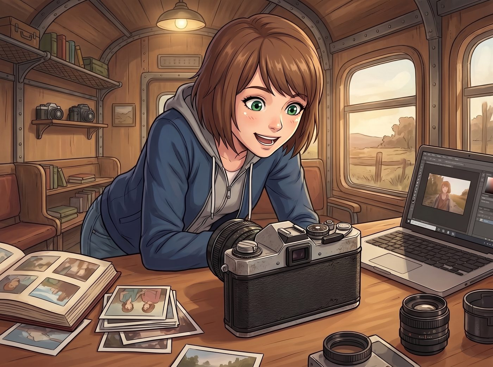
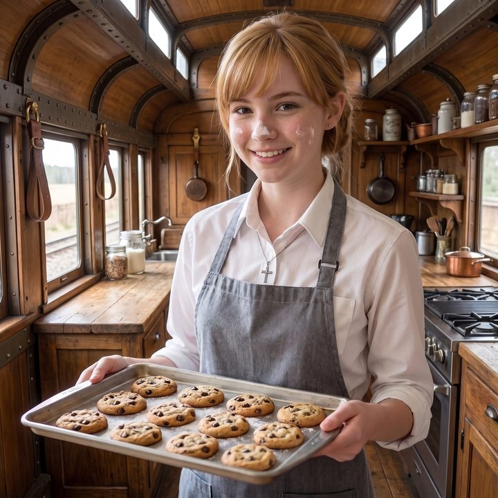
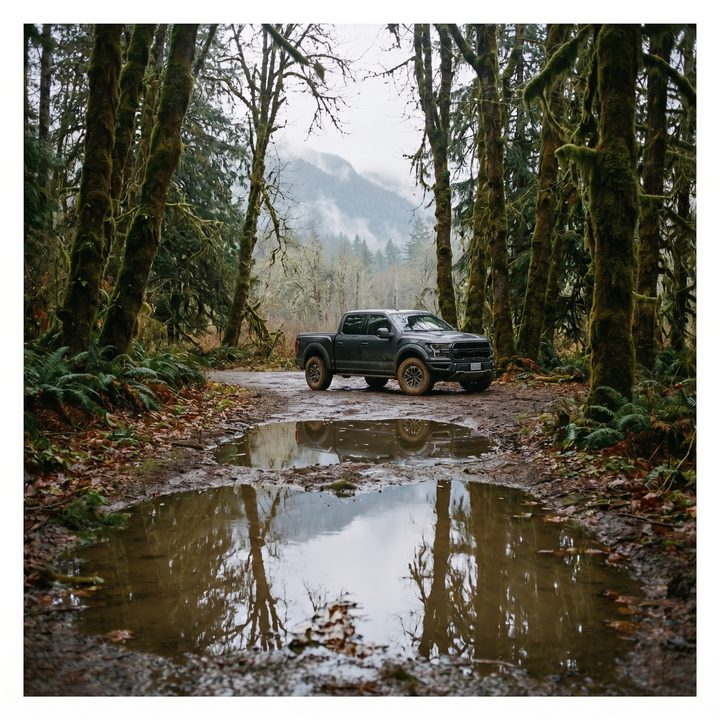
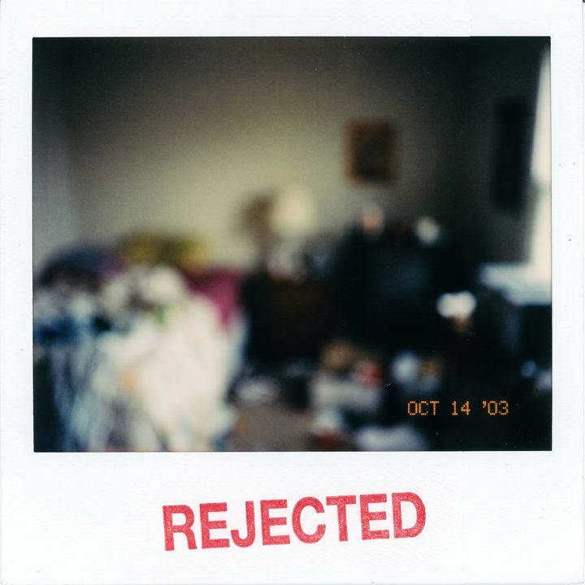
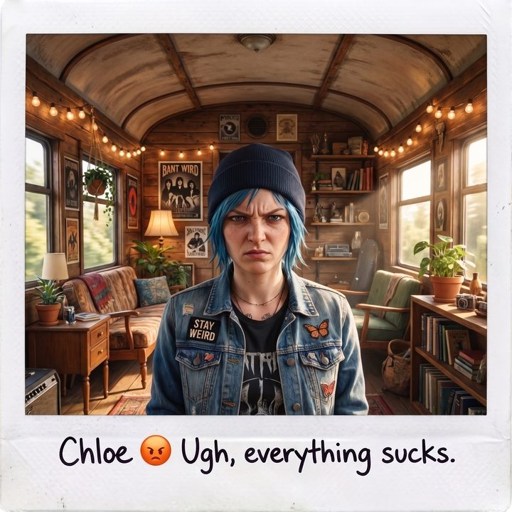
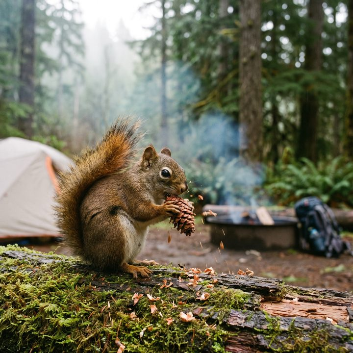

無螢幕的盲盒






奧林匹亞半島的雨季午後，二號車廂裡迎來了一個意想不到的包裹。
Lily 穿著整潔的米色針織衫，用一把美工刀精準地劃開了印有網購標誌的紙箱，從裡面拿出了一個看起來充滿廉價塑膠感、卻又意外復古的小盒子。
一、教具的到來
「各位，這是本營地剛通過邊緣青年夏令營視覺藝術啟蒙專案申請到的最新教具。」Lily 推了推圓框眼鏡，將那個小東西放在露營桌上，「無螢幕數位相機。」
原本癱在沙發上修圖的 Max，像隻聽到開罐器聲音的貓一樣，猛地彈了起來。
她湊到桌前，雙眼發亮地盯著那個小巧的機身。這台相機的設計完全重現了上世紀七零年代經典底片相機的造型，帶著一種粗糙卻迷人的復古美學。但最讓 Max 震驚的，是相機的背面——那裡沒有任何可以預覽畫面的液晶螢幕，只有一個孤零零的光學觀景窗和一個快門鍵。
「這是一台給夏令營八歲小屁孩玩的防摔玩具吧？」Chloe 咬著棒棒糖，不屑地瞥了一眼，「沒有螢幕？那拍完怎麼知道自己是不是拍糊了？這簡直是反人類設計。」
Victoria 也在一旁發出了一聲優雅的冷哼：「廉價的塑膠外殼，毫無技術含量的光學結構。把它拿進我的畫廊，簡直是對當代攝影藝術的侮辱。」
「這恰恰是它的行政優勢，Victoria 學姐。」Lily 平靜地解釋道，「沒有螢幕，意味著夏令營的兒童不會因為過度關注成片效果而產生社交焦慮，同時也降低了電池損耗和設備成本。這是一項極度精算過的防沉迷設計。」
二、延遲滿足的盲盒
然而，Max 根本聽不見她們的對話。她的手指輕輕撫摸著那台相機的機身，大腦裡已經掀起了一場文青攝影師的狂歡。
作為一個死忠的寶麗來愛好者，Max 討厭現代數位相機最大的原因，就是那塊該死的螢幕。人們按下快門後的第一反應永遠是低頭檢查，然後刪除、重拍，直到拍出一張完美的、卻毫無靈魂的塑膠照片。她迷戀底片，是因為底片有一種延遲滿足的盲盒感，有一種把瞬間鎖進暗箱裡的儀式感。
但底片太貴了，尤其是在這個物資匱乏的時期。而現在，這台裝著數位感光元件、卻剝奪了螢幕的玩具，完美地解決了這個痛點！它擁有底片的靈魂，卻不需要支付底片的破產級帳單！
「咳咳。」Max 努力壓抑住上揚的嘴角，裝出一副極其專業的成年人姿態，「作為營地的駐紮攝影師，我認為我非常有必要先替夏令營的孩子們……測試一下這台設備的可靠性。畢竟，我們不能把有缺陷的器材交給兒童，對吧？」
Chloe 挑了挑眉，用一種看穿一切的眼神看著她：「Max，妳現在的表情，就像一個打著為了培養孩子智力的幌子，給自己買了最新款遊戲機的中年老爸。」
「這叫嚴謹的器材測評！」Max 臉頰微紅，一把抓起那台相機，像個得到糖果的三歲小孩一樣衝出了車廂，「我先去外面拍幾張看看！」
三、夏令營遊樂場
接下來的三天，二號車廂徹底淪為了 Max 的夏令營遊樂場。
這個平時總是猶豫不決、按下快門前要思考半天的憂鬱攝影師，徹底放飛了自我。沒有了這張構圖好不好、曝光對不對的即時反饋壓力，Max 變成了一台無情的快門機器。
「喀嚓！」Chloe 剛洗完頭、像隻落水狗一樣甩著藍色短髮的瞬間被拍了下來。「喂！Max！刪掉！那絕對醜死了！」Chloe 怒吼。「刪不掉！沒有螢幕！沒有刪除鍵！這是盲盒！」Max 狂笑著跑開，像個惡作劇成功的熊孩子。
「喀嚓！」Victoria 剛敷上面膜，翻著白眼的樣子被記錄了下來。「Maxine Caulfield！如果這張照片流出這個車廂，我就買凶殺了妳！」名媛氣急敗壞地追著她打。
「喀嚓！」Kate 剛烤好一盤餅乾，臉上沾著麵粉的溫柔笑容被定格。「啊，希望我閉眼的時候沒有被拍到。」Kate 溫柔地笑了笑，完全包容了 Max 的上頭行為。
Max 甚至會趴在泥巴地上拍一隻正在搬運餅乾屑的螞蟻，會對著雨後的積水狂按十幾次快門。她不需要等待寶麗來的顯影，也不需要心疼相紙的餘額。她找回了八歲時第一次拿到拋棄式相機時，那種最純粹、最不計後果的記錄的快樂。
四、四千多張的清算
直到第四天晚上，這場屬於成年人的夏令營狂歡才被迫終止。
Lily 端著熱牛奶，面無表情地拔下了相機裡的記憶卡，插進了工作站的讀卡機裡。
「Max 學姐。」Lily 的聲音在安靜的車廂裡響起，帶著一種清算資產時的冰冷，「在過去的七十二小時內，您這台無螢幕教具總共產生了四千兩百一十五張數位照片。」
Chloe 倒抽了一口涼氣：「四千多張？！妳這三天是把這破玩具當機關槍在掃射嗎？！」
Lily 推了推眼鏡，將螢幕上的數據分類展示出來：「更令人擔憂的是數據結構。在這四千兩百一十五張照片中，有一千兩百張是嚴重的失焦廢片；八百張是 Chloe 學姐在不同角度發脾氣的臉；而剩下的……」Lily 的滑鼠在一個巨大的資料夾上點了一下，「有高達一千五百張，是營地外圍那隻正在啃松果的北美灰松鼠的連拍。您幾乎為牠拍攝了一部定格動畫。」
Max 坐在沙發上，像個被家長沒收了遊戲機、還被公開處刑瀏覽紀錄的小孩，羞愧地把臉埋進了抱枕裡。
五、無法割捨的副作用
「所以，測試結論是什麼，攝影大師？」Chloe 幸災樂禍地走過來，用手指戳了戳 Max 躲在抱枕後的腦袋。
Max 從抱枕縫隙裡露出一隻眼睛，看著那台被放在桌上的復古小玩具。雖然拍了四千多張垃圾，但當 Lily 剛才在螢幕上快速滾動那些照片時，那種盲盒開獎般的驚喜感，以及那些毫無造作、因為無法預覽而極度真實的瞬間，依然讓她感到無比滿足。
「測試結論是……」Max 坐直了身子，理直氣壯地將那台相機重新揣進了自己的口袋，「這台教具存在極易導致成年人喪失心智與自控力的嚴重副作用。為了保護夏令營的邊緣青年，我必須無限期將其沒收，並作為我的私人備用機。」
Lily 點了點頭，在電子表單上敲了幾個字：「高階教具損耗與危險隔離。審批通過。不過 Max 學姐，請您明天自行清理硬碟空間，撥給我們的雲端存儲額度，不是用來存放松鼠的定格動畫的。」